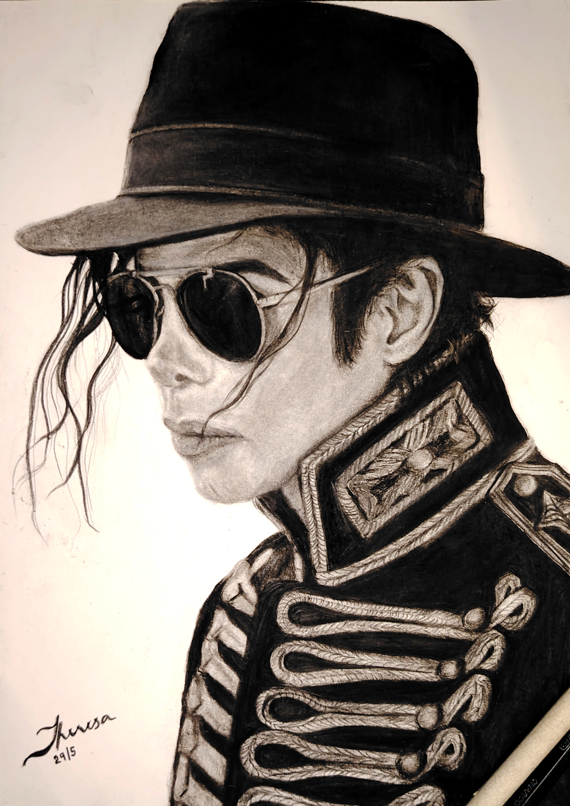
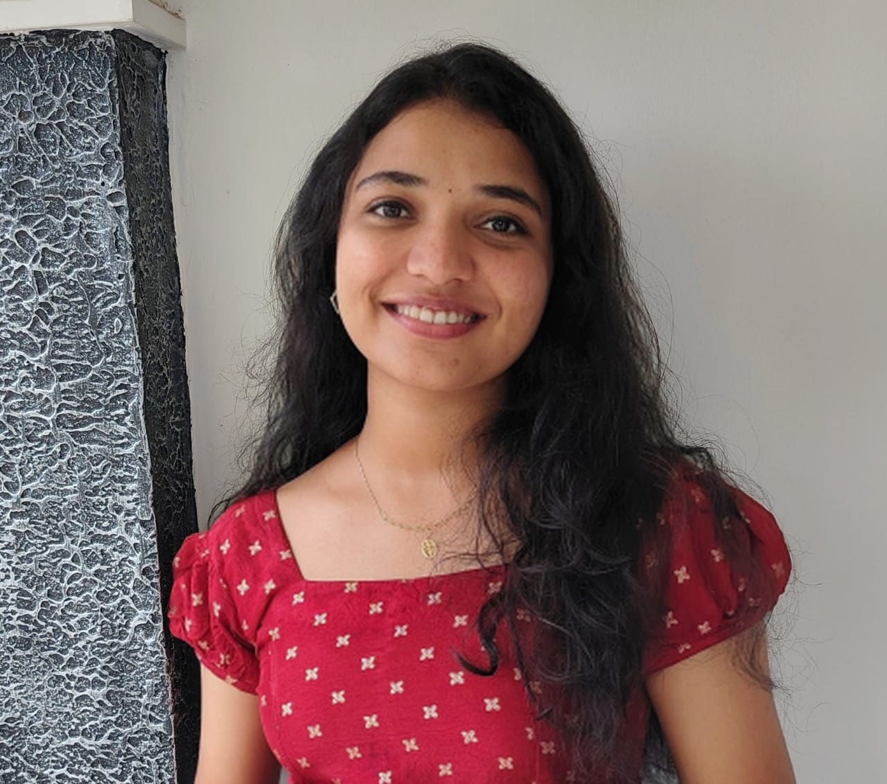
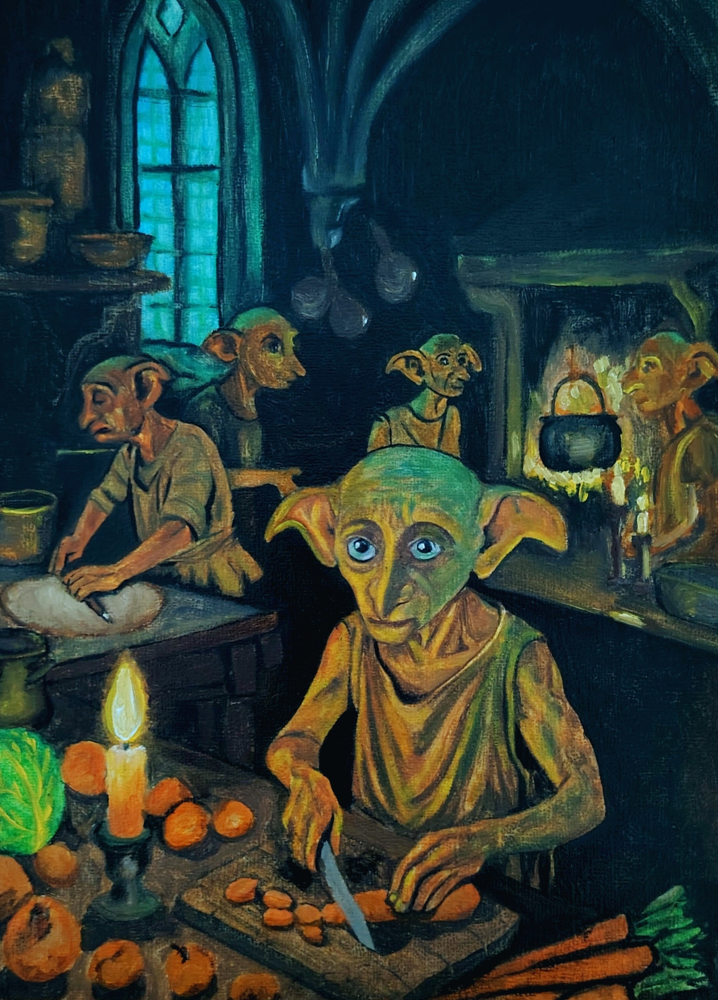
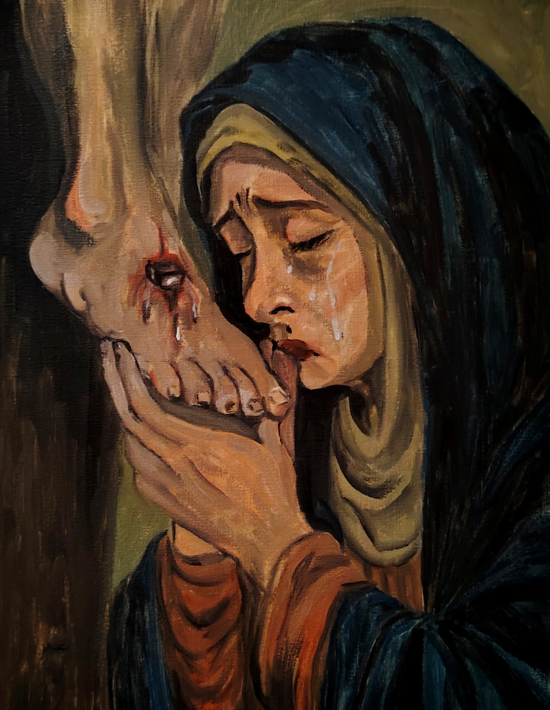
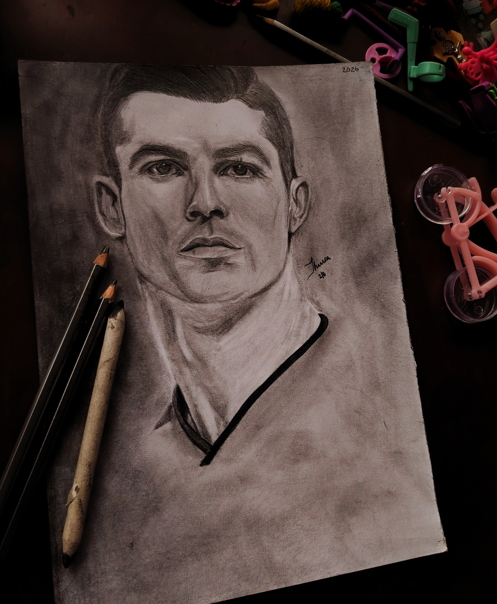
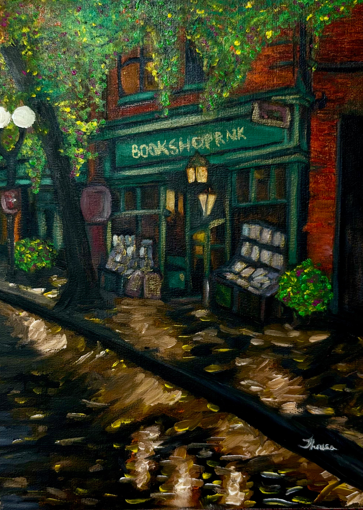
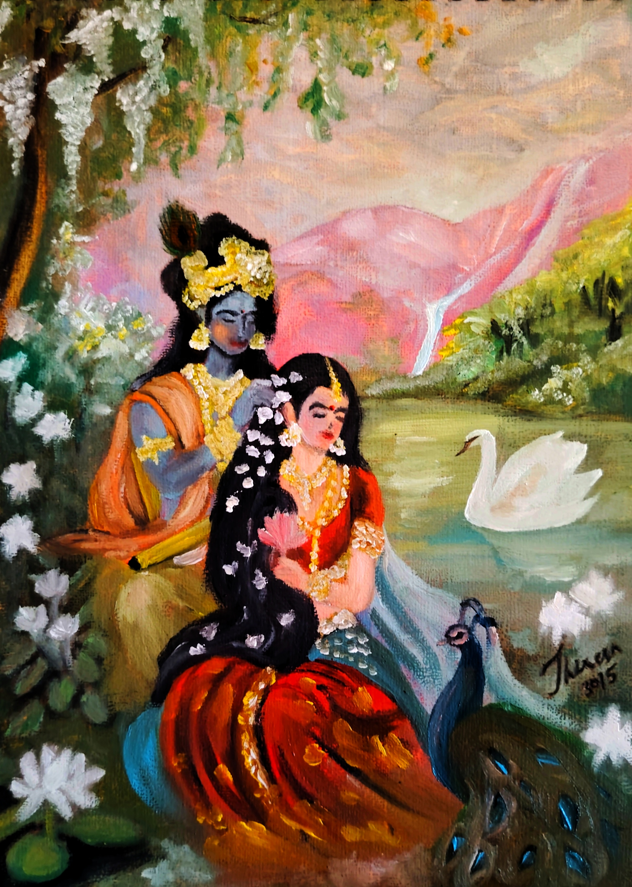
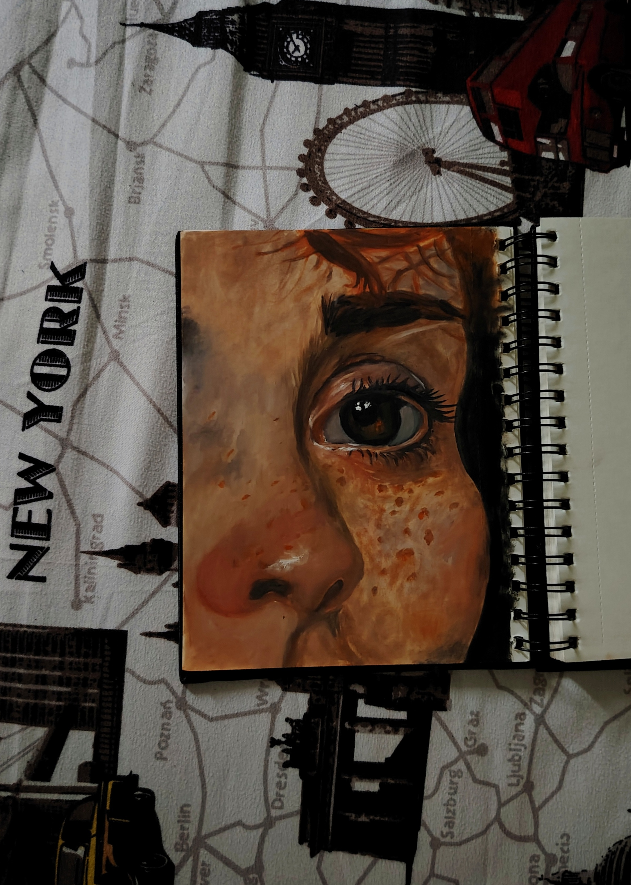
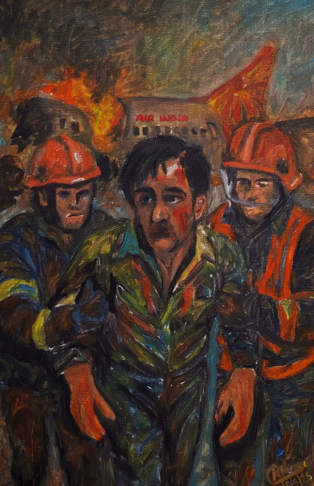
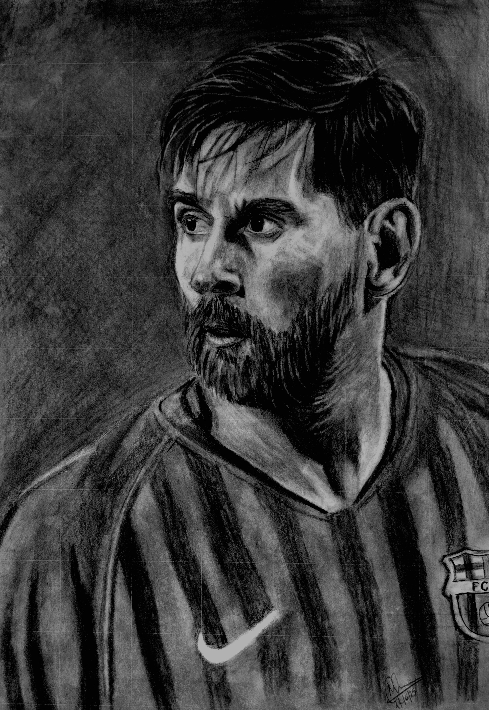

Silent Moonwalk
A charcoal portrait capturing the timeless spirit and iconic presence of Michael Jackson.
Hello, I am

A creative learner with a passion for design, storytelling, and building simple, beautiful web experiences.
Reach Out
Design, creativity, and curiosity drive my journey. I'm NiYa Theresa, passionate about crafting thoughtful digital experiences, exploring new ideas, and continuously growing as a designer.
Driven by curiosity and inspired by creativity, I am a student who finds joy in both technology and art. I believe every challenge is an opportunity to learn, every idea a chance to create, and every experience a step toward growth.
With a passion for software engineering, design, and innovation, I enjoy transforming ideas into meaningful digital experiences. Whether through code, visual design, music, or artistic expression, I strive to blend logic with creativity and bring fresh perspectives to everything I do.
As a collaborative and adaptable learner, I embrace new technologies, value meaningful connections, and continuously seek opportunities to explore, create, and make a positive impact.
Explore my skills, community work, artwork, projects, and ways to connect — all designed to show who I am and what I enjoy building.
Swipe through the tools and strengths I use to create beautiful digital experiences.
Learn how I contribute through leadership, design, and creative support.
Browse my collection of paintings and creative pieces that showcase my artistic vision.
View a selection of projects that show creativity, usability, and real-world impact.
Find the best ways to reach me and start a conversation.
Swipe to discover more skills.
Creating clean, modern, and user-friendly website experiences with a strong focus on aesthetics and usability.
Building accessible, well-structured, and semantic web pages.
Designing responsive and visually engaging interfaces across all devices.
Creating wireframes, prototypes, design systems, and user interface designs.
Designing presentations, social media content, and visual assets with a creative touch.
Crafting intuitive user experiences through research, wireframing, prototyping, and visual design.
Developing programs, solving problems, and exploring automation and data-driven solutions.
Understanding core programming concepts, algorithms, and logical problem-solving.
Transforming ideas into meaningful and engaging digital experiences.
Swipe to see my community contributions.
Led the design team, overseeing branding, visual content, and creative direction for events and initiatives while fostering collaboration within the community.
Collaborated on posters, social media creatives, and branding materials for technical events, workshops, and community initiatives.
Contributed to event branding, promotional materials, and visual designs, helping create an engaging experience for participants and attendees.
Contributing my time and skills to support local organizations and community projects that align with my values.
Designed creative assets and promotional content while supporting community events, learning programs, and student engagement activities.
A curated collection of MY Artworks inspired by imagination, emotion, and creativity.

A charcoal portrait capturing the timeless spirit and iconic presence of Michael Jackson.

An oil painting depicting Dobby and his friends preparing a feast together.
Bringing his quirky personality and comic charm to life.

An oil painting capturing Mother Mary's grief and devotion as she tenderly kisses the feet of Jesus.

A pencil portrait of Cristiano Ronaldo, capturing the determination, passion, and excellence that define his legacy.

An oil painting celebrating the cozy atmosphere and endless possibilities found within a bookshop.

An oil painting portraying Radha and Krishna seated together beside a graceful swan, symbolizing love, devotion, and serenity.

An artwork portraying the beauty, mystery, and expression held within an eye.

A moment of courage and survival, where hope emerges amidst chaos as rescuers guide a survivor away from danger.

A charcoal portrait capturing the calm determination and timeless brilliance of Lionel Messi, a player whose legacy extends far beyond the football field.
Swipe to explore my projects.
Created a visually appealing cookbook, combining layout design, typography, and creative storytelling to present recipes in an engaging format.
A design concept for sharing stories, tips, and ideas in a friendly and readable format.
A simple and elegant website to share my work, skills, and contact details with visitors.
Collaborated in a hackathon at Rajagiri to design an interactive learning platform aimed at improving communication and engagement between teachers and students in rural communities.